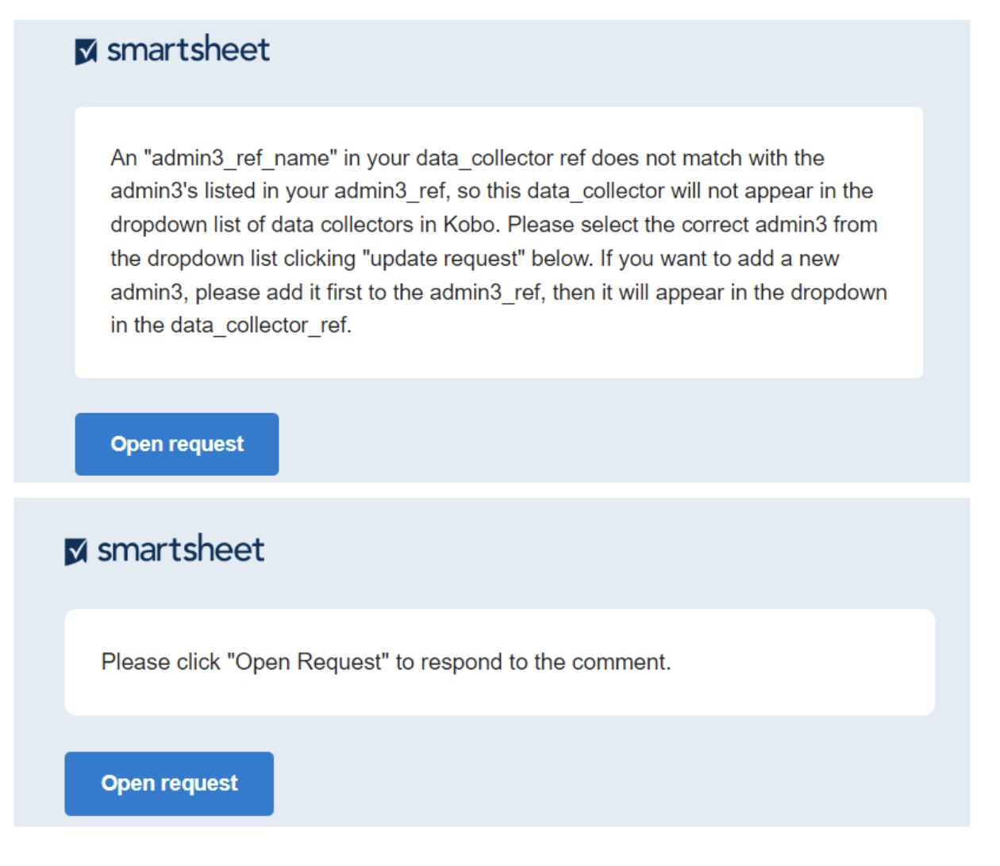

Reference Files
Kusasisha Faili Za Kumbukumbu
Faili zote za kumbukumbu ni updated Katika Smartsheet Dynamic View. Faili za kumbukumbu kutumika kama pembejeo kwa orodha dropdown katika fomu kobotoolbox na vyenye data ambayo ni aliongeza kwa seti data bwana kupitia joins. Zina habari kamili juu ya viwango vya kiutawala vya jamii za wavuvi (nchi, mkoa, wilaya, kijiji), maeneo ya kutua, uwanja wa uvuvi, wavuvi, wanunuzi, watoza data, spishi, maeneo ya usimamizi, aina za gia, na mashirika ya kushirikiana. Hatua zilizo hapa chini zinaelezea jinsi ya kusasisha faili za kumbukumbu na habari mpya.
Hatua ya 1: Unda akaunti ya bure ya smartsheet.
Akaunti ya bure inaweza kuundwa katika https://www.smartsheet.com/
Chagua “Jaribu smartsheet kwa bure”
Hatua ya 2: Toa Bahari Isiyo Na Viatu anwani ya barua pepe uliyotumia kuunda akaunti yako ya smartsheet.
Bahari isiyo na viatu kisha itashiriki faili za kumbukumbu zinazohusiana na shirika lako.
Ili kuona faili zako za kumbukumbu utahitaji kuingia kwenye smartsheet Dynamic View ukitumia hati zako za smartsheet: https://dynamicview.smartsheet.com/login
Mara baada ya kuingia Kwenye Dynamic View (sio programu ya smartsheet), utaona orodha ya faili za kumbukumbu zilizoshirikiwa na akaunti yako (Kielelezo 1).
Kielelezo 1: Orodha ya faili za kumbukumbu Katika Dynamic View

Hatua ya 3: Bofya kwenye faili ya marejeleo ili kufanya masasisho
Mara baada ya kufunguliwa, unaweza kubofya kila safu ili kufanya mabadiliko kwenye data iliyopo, au bonyeza kitufe cha “Mpya” kwenye kona ya juu kulia ili kuongeza data mpya (Kielelezo 2).
Jopo la maelezo litaonekana upande wa kulia ambapo utaingiza habari muhimu (Kielelezo 3; Jedwali 1). Chagua “hifadhi” upande wa chini kulia wa paneli ya maelezo unapomaliza kusasisha. Huna haja ya kuwajulisha Bahari Ya Barefoot wakati unafanya mabadiliko au nyongeza kwa karatasi za ref. Itakuwa moja kwa moja ilijiunga na master reference files na kuingizwa Katika Kobo.
Ili kuacha maoni au kuuliza timu Isiyo Na Viatu maswali yoyote, chagua kichupo cha “Maoni” kwenye jopo la maelezo. Watu wote ambao faili ya kumbukumbu inashirikiwa nao, pamoja na timu Ya Bahari Ya Barefoot, watapokea arifa wakati maoni yanafanywa, kwa hivyo hakuna haja ya kumtambulisha mtu yeyote.
Kielelezo 2: Mfano mtazamo wa admin2_ref Katika Mtazamo Nguvu

Kielelezo 3: Mfano mtazamo wa admin2_ref maelezo jopo Katika Mtazamo Nguvu

Hatua ya 4: Jibu maombi ya sasisho wakati data haipo au sio sahihi, au kujibu maoni.
Ikiwa kuna habari isiyokamilika au isiyo sahihi ambayo ni muhimu kwa kujaza Kushuka Kwa Kobo au kwa kujiunga, au ikiwa maoni yametolewa kwenye karatasi, ombi la sasisho litatumwa kwa watumiaji wote wanaofaa, na kuwachochea kusasisha habari au kujibu maoni (Kielelezo 4). Kwa chaguo-msingi, kila mtu aliye na ufikiaji wa faili zako za kumbukumbu atapokea ombi la sasisho.
Hakikisho la data ambayo inahitaji kusasishwa au kujibiwa itaonekana chini ya ujumbe wa barua pepe, lakini hautaweza kusasisha data yoyote moja kwa moja kwenye barua pepe
- Chini ya barua pepe, kuna kiungo cha “Nenda kwenye karatasi”; hata hivyo, karatasi ya msingi ina upatikanaji mdogo. Tafadhali kagua data yako au ujibu maoni kupitia ombi Wazi.
Bonyeza kitufe cha “Fungua Ombi” katika ujumbe wa barua pepe.
Dirisha jipya la kivinjari cha mtandao litafunguliwa na usanidi kama wa fomu kwa kila kiingilio (Kielelezo 5)
Pitia sehemu ZA bfo na ujaze sehemu zinazoweza kuhaririwa.
Bofya inayofuata chini ya skrini ili upitie kila ingizo linalohitaji kusasishwa.
Ili kuruka kiingilio (k. m. ikiwa bado huna uhakika ni jibu gani la kuchagua) bofya “Inayofuata” bila kufanya uteuzi katika safu wima zinazoweza kuhaririwa. Ingizo linalofuata ambalo linahitaji kusasishwa litaonekana.
Ikiwa unahitaji kutoka kwenye ukurasa au simama kabla ya maingizo yote kusasishwa, chaguo zako zinapaswa kuhifadhiwa wakati mwingine utakapofungua tena ombi. Baada ya kufungua ili kuendelea, bonyeza tu “Ifuatayo” hadi upate kiingilio ambacho kinahitaji kusasishwa.
Unapofika kwenye kiingilio cha mwisho, bonyeza “Imekamilika”. Ujumbe ibukizi utaonekana ukiuliza ikiwa uko Tayari kuwasilisha sasisho lako?’:
Bofya “Rudi nyuma” ikiwa unahitaji kukagua
Bofya “Wasilisha Sasisho” ili kuwasilisha masasisho yako.
Sasisho zako zinaongezwa kiatomati kwenye faili ya kumbukumbu na unaweza kuzitazama Kwa Mtazamo Wa Nguvu
Ikiwa wakati wowote unakutana na makosa yoyote, una maswali, au unahitaji msaada wa kusasisha faili za kumbukumbu, tafadhali wasiliana nasi kwa barefootinfo@barefootocean.org.
Kielelezo 4: Mfano “Sasisha Ombi” barua pepe wakati habari inahitaji kusahihishwa au maoni yanahitaji kujibiwa.

Jedwali 1: mashamba ya msingi katika kila moja ya faili za kumbukumbu. Field aina ” BFO ” ni kusimamiwa Na Barefoot Ocean na si editable. Ili kuomba mabadiliko kwenye sehemu yoyote ya “bfo”, tafadhali acha maoni. Mashamba tu na aina ya shamba “editable” inaweza kuhaririwa. Aina ya shamba “auto” inaishi moja kwa moja.
| Jina la shamba | Maelezo ya shamba | Aina ya shamba |
|---|---|---|
| Faili zote za kumbukumbu | ||
| latest_comment | Safu hii huhifadhi maoni ya mwisho ambayo yalitolewa kwa safu hiyo. Ili kuona majadiliano yote ya maoni kwa safu hiyo, bonyeza tu mahali popote kwenye safu. Jopo la maelezo litaonekana, kama inavyofanya Kwenye Kielelezo 3. Bofya kwenye kichupo cha “Maoni” ili kuona maoni yote ya safu mlalo hiyo. | auto |
| modified_date | Tarehe ya mwisho hariri | auto |
| modified_by | User kwamba alifanya mwisho hariri | auto |
| admin1_ref | ||
| country | Nambari YA nchi YA ISO, ambayo ni nambari ya mchanganyiko wa barua inayotambuliwa kimataifa | BFO |
| name | Jina la admin1, ngazi ya juu ya utawala baada ya nchi (yaani mkoa) bila nafasi na hakuna alama za alama, inasisitiza tu | BFO |
| label | Jina la admin1, ngazi ya juu ya utawala baada ya nchi (yaani mkoa) na nafasi na alama za alama kuruhusiwa. Tafadhali usibadilishe lebo isipokuwa lazima kabisa, kwani kujiunga kunategemea hii. | inaweza kuhaririwa |
| partner_flag | Bendera itakuwa nyekundu kama “mshirika” thamani haipo katika org_ref | BFO |
| partner | Jina la mshirika bila nafasi na hakuna uakifishaji, inasisitiza tu. Orodha ya kushuka imeunganishwa na safu ya “jina” kwenye org_ref. | inaweza kuhaririwa |
| active | Chagua “Ndiyo” ikiwa data inakusanywa hapo kwa sasa. Ikiwa hukusanya tena data hapo, na unataka kuificha kutoka Kwa Kushuka Kwa Kobo, chagua ” Hapana.” | inaweza kuhaririwa |
| remove | Chagua “Ndio” ikiwa ungependa kuondoa admin1. Admin1s inapaswa kuondolewa tu ikiwa jina sio sahihi au ni nakala ya rekodi iliyopo. Tafadhali acha maoni juu ya sababu ya kuondolewa. Ikiwa data haikusanywa tena hapo, chagua “Hapana” kutoka kwa safu wima ya” amilifu ” badala yake. | inaweza kuhaririwa |
| admin2_ref | ||
| country | Nambari YA nchi YA ISO, ambayo ni nambari ya mchanganyiko wa barua inayotambuliwa kimataifa | BFO |
| name | Jina la admin2, ngazi ya juu ya utawala baada ya admin1 (yaani wilaya) bila nafasi na hakuna alama za alama, inasisitiza tu | BFO |
| label | Jina la admin2, ngazi ya juu ya utawala baada ya admin1 (yaani wilaya) na nafasi na alama za alama kuruhusiwa. Tafadhali usibadilishe lebo isipokuwa lazima kabisa, kwani kujiunga kunategemea hii. | inaweza kuhaririwa |
| admin1_flag | Bendera itakuwa nyekundu kama “admin1_ref_name” thamani haipo katika admin1_ref | BFO |
| admin1_ref_name | Admin1 jina na hakuna nafasi na hakuna punctuation, tu inasisitiza. Orodha ya kushuka imeunganishwa na safu ya “jina” katika admin1_ref. | inaweza kuhaririwa |
| active | Chagua “Ndiyo” ikiwa data inakusanywa hapo kwa sasa. Ikiwa hukusanya tena data hapo, na unataka kuificha kutoka Kwa Kushuka Kwa Kobo, chagua ” Hapana.” | inaweza kuhaririwa |
| remove | Chagua “Ndio” ikiwa ungependa kuondoa admin2. Admin2s inapaswa kuondolewa tu ikiwa jina sio sahihi au ni nakala ya rekodi iliyopo. Tafadhali acha maoni juu ya sababu ya kuondolewa. Ikiwa data haikusanywa tena hapo, chagua “Hapana” kutoka kwa safu wima ya” amilifu ” badala yake. | inaweza kuhaririwa |
| admin3_ref | ||
| country | Nambari YA nchi YA ISO, ambayo ni nambari ya mchanganyiko wa barua inayotambuliwa kimataifa | BFO |
| name | Majina ya Admin2 na admin3 pamoja na hakuna nafasi na hakuna alama za alama, inasisitiza tu.Admin3 ni ngazi ya juu ya utawala baada ya admin2 (yaani kijiji). | BFO |
| label | Jina la admin3, ngazi ya juu ya utawala baada ya admin2 (yaani kijiji) na nafasi na alama za alama kuruhusiwa. Tafadhali usibadilishe lebo isipokuwa lazima kabisa, kwani kujiunga kunategemea hii. | inaweza kuhaririwa |
| admin1 | Admin1 jina na nafasi na punctuation kuruhusiwa. Hii ni vunjwa kutoka admin1_ref na auto wenyeji kulingana na admin2 kuchaguliwa. | BFO |
| admin1_ref_name | Admin1 jina na hakuna nafasi na hakuna punctuation, tu inasisitiza. Hii ni vunjwa kutoka admin1_ref na auto populated kulingana na admin2 kuchaguliwa | BFO |
| admin2_flag | Bendera itakuwa nyekundu kama “admin2” thamani haipo katika admin2_ref. | BFO |
| admin2 | Admin2 jina na nafasi na punctuation kuruhusiwa. Orodha ya kushuka imeunganishwa na safu ya “lebo” katika admin2_ref. | inaweza kuhaririwa |
| admin2_ref_name | Admin2 jina na hakuna nafasi na hakuna punctuation, tu inasisitiza. Hii ni vunjwa kutoka admin2_ref na auto wenyeji kulingana na admin2 kuchaguliwa. | BFO |
| active | Chagua “Ndiyo” ikiwa data inakusanywa hapo kwa sasa. Ikiwa hukusanya tena data hapo, na unataka kuificha kutoka Kwa Kushuka Kwa Kobo, chagua ” Hapana.” | inaweza kuhaririwa |
| remove | Chagua “Ndio” ikiwa ungependa kuondoa admin3. Admin3s inapaswa kuondolewa tu ikiwa jina sio sahihi au ni nakala ya rekodi iliyopo. Tafadhali acha maoni juu ya sababu ya kuondolewa. Ikiwa data haikusanywa tena hapo, chagua “Hapana” kutoka kwa safu wima ya” amilifu ” badala yake. | inaweza kuhaririwa |
| admin3_lat | Latitudo ya admin3 | inaweza kuhaririwa |
| admin3_long | Longitudo ya admin3 | inaweza kuhaririwa |
| m1-m4_flag | Bendera itakuwa checked kama management_ID_1-4 haipo katika management_ref. | BFO |
| management_ID_1-4 | Jina la kitambulisho cha usimamizi, na nafasi na uakifishaji unaruhusiwa. Ikiwa kuna maeneo 4 ya usimamizi ndani ya admin3, chagua tu kitengo cha kwanza cha usimamizi katika “management_ID_1”, kitengo cha pili cha usimamizi katika” management_ID_2”, nk. Orodha ya kushuka ni kushikamana na” management_ID ” safu katika management_ref. | inaweza kuhaririwa |
| management_govern_1-4 | Ndiyo / Hapana shamba kutambua kama kijiji ni wajibu kwa ajili ya usimamizi wa eneo. | inaweza kuhaririwa |
| buyer_ref | ||
| country | Nambari YA nchi YA ISO, ambayo ni nambari ya mchanganyiko wa barua inayotambuliwa kimataifa | BFO |
| name | Jina la mnunuzi bila nafasi na hakuna alama za alama, inasisitiza tu | BFO |
| label | Jina la mnunuzi na nafasi na punctuation kuruhusiwa. Tafadhali usibadilishe lebo isipokuwa lazima kabisa, kwani kujiunga kunategemea hii. | inaweza kuhaririwa |
| buyer_gender | Jinsia ya mnunuzi; M (kiume), F (kike) au NB (nonbinary) | inaweza kuhaririwa |
| buyer_id | Kitambulisho cha nambari ya kipekee ili kutambua mnunuzi. Tafadhali acha maoni ikiwa wanunuzi wawili tofauti wana KITAMBULISHO sawa. Kwa chaguo-msingi, wanunuzi wawili walio na jina sawa, hata ikiwa ni kutoka vijiji viwili tofauti, watapokea KITAMBULISHO sawa isipokuwa imeambiwa vinginevyo. | BFO |
| admin1 | Admin1 jina ambapo mnunuzi hununua kutoka, na nafasi na alama za alama kuruhusiwa. Hii ni vunjwa kutoka admin1_ref na auto wenyeji kulingana na admin3_ref_name kuchaguliwa. | BFO |
| admin2 | Admin2 jina ambapo mnunuzi hununua kutoka, na nafasi na alama za alama kuruhusiwa. Hii ni vunjwa kutoka admin2_ref na auto wenyeji kulingana na admin3_ref_name kuchaguliwa. | BFO |
| admin3 | Admin3 jina ambapo mnunuzi hununua kutoka, na nafasi na alama za alama kuruhusiwa. Hii ni vunjwa kutoka admin3_ref na auto wenyeji kulingana na admin3_ref_name kuchaguliwa. | BFO |
| admin3_ref_name | Majina ya Admin2 na admin3 pamoja na hakuna nafasi na hakuna alama za alama, inasisitiza tu.Orodha ya kushuka imeunganishwa na safu ya “jina” katika admin3_ref. | inaweza kuhaririwa |
| admin3_flag | Bendera itakuwa nyekundu kama “admin3_ref_name” thamani haipo katika admin3_ref. | BFO |
| active | Chagua “Ndiyo” ikiwa data inakusanywa kwa sasa kutoka kwa mtu huyu. Ikiwa data haikusanywa tena kutoka kwa mtu huyu, na unataka kuificha kutoka Kwa Kushuka Kwa Kobo, chagua ” Hapana.” | inaweza kuhaririwa |
| remove | Chagua “Ndiyo” ikiwa ungependa kuondoa mnunuzi. Wanunuzi wanapaswa kuondolewa tu ikiwa jina sio sahihi au ni nakala ya rekodi iliyopo. Tafadhali acha maoni juu ya sababu ya kuondolewa. Ikiwa mnunuzi hayuko tena kijijini au hainunui tena, chagua “Hapana” kutoka kwa safu” inayotumika ” badala yake. | inaweza kuhaririwa |
| fisher_ref | ||
| country | Nambari YA nchi YA ISO, ambayo ni nambari ya mchanganyiko wa barua inayotambuliwa kimataifa | BFO |
| name | Jina la mvuvi bila nafasi na hakuna alama za alama, inasisitiza tu | BFO |
| label | Jina la mvuvi na nafasi na punctuation kuruhusiwa. Tafadhali usibadilishe lebo isipokuwa lazima kabisa, kwani kujiunga kunategemea hii. | inaweza kuhaririwa |
| fisher_gender | Jinsia ya mvuvi; M (kiume), F (kike) au NB (nonbinary) | inaweza kuhaririwa |
| fisher_id | Kitambulisho cha nambari ya kipekee ili kumtambua mvuvi. Tafadhali acha maoni ikiwa wavuvi wawili tofauti wana KITAMBULISHO sawa. Kwa chaguo-msingi, wavuvi wawili wenye jina sawa, hata kama wanatoka vijiji viwili tofauti, watapokea KITAMBULISHO sawa isipokuwa kama imeelezwa vinginevyo. | BFO |
| admin1 | Admin1 jina ambapo fisher ardhi catch yao, na nafasi na alama za alama kuruhusiwa. Hii ni vunjwa kutoka admin1_ref na auto wenyeji kulingana na admin3_ref_name kuchaguliwa. | BFO |
| admin2 | Admin2 jina ambapo fisher ardhi catch yao, na nafasi na alama za alama kuruhusiwa. Hii ni vunjwa kutoka admin2_ref na auto wenyeji kulingana na admin3_ref_name kuchaguliwa. | BFO |
| admin3 | Admin3 jina ambapo fisher ardhi catch yao, na nafasi na alama za alama kuruhusiwa. Hii ni vunjwa kutoka admin3_ref na auto wenyeji kulingana na admin3_ref_name kuchaguliwa. | BFO |
| admin3_ref_name | Majina ya Admin2 na admin3 pamoja na hakuna nafasi na hakuna alama za alama, inasisitiza tu.Orodha ya kushuka imeunganishwa na safu ya “jina” katika admin3_ref. | inaweza kuhaririwa |
| admin3_flag | Bendera itakuwa nyekundu kama “admin3_ref_name” thamani haipo katika admin3_ref. | BFO |
| active | Chagua “Ndiyo” ikiwa data inakusanywa kwa sasa kutoka kwa mtu huyu. Ikiwa data haikusanywa tena kutoka kwa mtu huyu, na unataka kuificha kutoka Kwa Kushuka Kwa Kobo, chagua ” Hapana.” | inaweza kuhaririwa |
| remove | Chagua “Ndio” ikiwa ungependa kuondoa admin3. Admin3s inapaswa kuondolewa tu ikiwa jina sio sahihi au ni nakala ya rekodi iliyopo. Tafadhali acha maoni juu ya sababu ya kuondolewa. Ikiwa mvuvi hayuko tena kijijini au havui samaki tena, chagua “Hapana” kutoka kwa safu” inayotumika ” badala yake. | inaweza kuhaririwa |
| data_collector_ref | ||
| country | Nambari YA nchi YA ISO, ambayo ni nambari ya mchanganyiko wa barua inayotambuliwa kimataifa | BFO |
| name | Jina la mtoza data bila nafasi na hakuna alama za uakifishaji, inasisitiza tu | BFO |
| label | Jina la mtoza data na nafasi na punctuation kuruhusiwa. | inaweza kuhaririwa |
| gender | Jinsia ya mtoza data; M (kiume), F (kike) au NB (nonbinary) | inaweza kuhaririwa |
| admin3_flag | Bendera itakuwa nyekundu kama “admin3_ref_name” thamani haipo katika admin3_ref. | BFO |
| admin3_ref_name | Majina ya Admin2 na admin3 pamoja na hakuna nafasi na hakuna alama za alama, inasisitiza tu.Orodha ya kushuka imeunganishwa na safu ya “jina” katika admin3_ref. | inaweza kuhaririwa |
| landings_mon | Chagua “Ndio” ikiwa unataka mtoza data aonekane kwenye kushuka kwa Fomu Ya Ufuatiliaji Wa Kutua Kwa Kobo. | inaweza kuhaririwa |
| landings_prof | Chagua “Ndio” ikiwa unataka mtoza data aonekane kwenye kushuka kwa Fomu Ya wasifu Wa Kutua Kwa Kobo | inaweza kuhaririwa |
| hhs | Chagua “Ndio” ikiwa unataka mtoza data aonekane kwenye kushuka kwa Fomu ya Uchunguzi Wa Kaya Ya Kobo | inaweza kuhaririwa |
| comm_prof | Chagua “Ndio” ikiwa unataka mtoza data aonekane kwenye kushuka kwa Fomu Ya wasifu Wa Jamii Ya Kobo | inaweza kuhaririwa |
| remove | Chagua “Ndiyo” ikiwa ungependa kuondoa mkusanyaji wa data. | inaweza kuhaririwa |
| fishing_ground_ref | ||
| country | Nambari YA nchi YA ISO, ambayo ni nambari ya mchanganyiko wa barua inayotambuliwa kimataifa | BFO |
| name | Jina la uwanja wa uvuvi bila nafasi na hakuna alama za alama, inasisitiza tu | BFO |
| label | Jina la ardhi ya uvuvi na nafasi na punctuation kuruhusiwa. Tafadhali usibadilishe lebo isipokuwa lazima kabisa, kwani kujiunga kunategemea hii. | inaweza kuhaririwa |
| admin3_flag | Bendera itakuwa nyekundu kama “admin3_ref_name” thamani haipo katika admin3_ref. | BFO |
| admin3_ref_name | Majina ya Admin2 na admin3 pamoja na hakuna nafasi na hakuna alama za alama, inasisitiza tu.Orodha ya kushuka imeunganishwa na safu ya “jina” katika admin3_ref. | inaweza kuhaririwa |
| partner_flag | Bendera itakuwa nyekundu kama “mshirika” thamani haipo katika org_ref | BFO |
| partner | Jina la mshirika bila nafasi na hakuna uakifishaji, inasisitiza tu. Orodha ya kushuka imeunganishwa na safu ya “jina” kwenye org_ref. | inaweza kuhaririwa |
| latitude | Latitudo ya ardhi ya uvuvi | inaweza kuhaririwa |
| longitude | Longitudo ya ardhi ya uvuvi | inaweza kuhaririwa |
| active | Chagua “Ndiyo” ikiwa uwanja wa uvuvi unatumiwa kwa sasa. Ikiwa unataka kuificha kutoka Kwa Kushuka Kwa Kobo au haitumiki tena, chagua ” Hapana.” | inaweza kuhaririwa |
| remove | Chagua “Ndiyo” ikiwa ungependa kuondoa ardhi ya uvuvi | inaweza kuhaririwa |
| gear_ref | ||
| country | Nambari YA nchi YA ISO, ambayo ni nambari ya mchanganyiko wa barua inayotambuliwa kimataifa | BFO |
| name | Jina la ndani la gia bila nafasi na hakuna uakifishaji, inasisitiza tu | BFO |
| label | Jina la ndani la gear na nafasi na punctuation kuruhusiwa. Tafadhali usibadilishe lebo isipokuwa lazima kabisa, kwani kujiunga kunategemea hii. | inaweza kuhaririwa |
| gear_global | Jina la kiingereza la gia bila nafasi na hakuna uakifishaji, inasisitiza tu. Hii ni orodha ya kushuka predefined. Tafadhali chagua moja ambayo inafaa zaidi gia ya ndani, au toa maoni ikiwa huna uhakika. | inaweza kuhaririwa |
| gear_detail | Maelezo ya gia | inaweza kuhaririwa |
| species_group | Aina ya kundi gear malengo. Ikiwa gia moja inalenga spishi nyingi, tengeneza safu mpya ya data kwa kila kikundi cha spishi. Orodha ya kushuka ni kushikamana na” species_group ” safu katika species_ref. | inaweza kuhaririwa |
| species_flag | Bendera itakuwa nyekundu kama “species_group” kuchaguliwa haipo katika species_ref. | BFO |
| partner | Jina la mshirika bila nafasi na hakuna uakifishaji, inasisitiza tu. Orodha ya kushuka imeunganishwa na safu ya “jina” kwenye org_ref. | inaweza kuhaririwa |
| partner_flag | Bendera itakuwa nyekundu kama “mshirika” thamani haipo katika org_ref | BFO |
| remove | Chagua “Ndio” ikiwa ungependa kuondoa gia. Tafadhali acha maoni kuelezea kwa nini. | inaweza kuhaririwa |
| landing_site_ref | ||
| country | Nambari YA nchi YA ISO, ambayo ni nambari ya mchanganyiko wa barua inayotambuliwa kimataifa | BFO |
| name | Jina la tovuti ya kutua bila nafasi na hakuna uakifishaji, inasisitiza tu | BFO |
| label | Jina la tovuti ya kutua na nafasi na punctuation kuruhusiwa | inaweza kuhaririwa |
| admin3_flag | Bendera itakuwa nyekundu kama “admin3_ref_name” thamani haipo katika admin3_ref. | BFO |
| admin3_ref_name | Majina ya Admin2 na admin3 pamoja na hakuna nafasi na hakuna alama za alama, inasisitiza tu.Orodha ya kushuka imeunganishwa na safu ya “jina” katika admin3_ref. | inaweza kuhaririwa |
| remove | Chagua “Ndiyo” ikiwa ungependa kuondoa tovuti ya kutua. | inaweza kuhaririwa |
| management_ref | ||
| country | Nambari YA nchi YA ISO, ambayo ni nambari ya mchanganyiko wa barua inayotambuliwa kimataifa | BFO |
| partner_ID | Jina la mshirika bila nafasi na hakuna uakifishaji, inasisitiza tu. Orodha ya kushuka imeunganishwa na safu ya “jina” kwenye org_ref. | inaweza kuhaririwa |
| partner_flag | Bendera itakuwa nyekundu kama “mshirika” thamani haipo katika org_ref | BFO |
| management_id | Jina la kipekee la eneo la usimamizi na nafasi na punctuation kuruhusiwa. Tafadhali usibadilishe jina isipokuwa lazima kabisa, kwani kujiunga kunategemea hii. | inaweza kuhaririwa |
| management_id_unique | Jina la kipekee la eneo la usimamizi na tarehe ya kufungwa. Hii inapaswa kuwa management_id bila nafasi au alama za uakifishaji pamoja na nambari inayobainisha kufungwa kwa kipekee na eneo hilo. Kwa mfano, kama management_id aitwaye Boston alikuwa na tarehe mbili kufunga kuhusishwa na hayo, tungekuwa na mbili management_id_unique mashamba kupewa. Moja inaweza Kuwa Boston_1 na Mwingine Boston_2 kutambua kufungwa ndani ya eneo la usimamizi. | inaweza kuhaririwa |
| management_fishing_ground | Orodha ya maeneo ya uvuvi kuhusishwa na tarehe management_id na kufungwa. | inaweza kuhaririwa |
| management_method | Aina ya njia ya usimamizi, ikiwa ni pamoja na kufungwa kwa muda, hakuna maeneo ya kuchukua, nk. Hii ni orodha iliyofafanuliwa mapema. Tafadhali toa maoni ikiwa huna uhakika. | inaweza kuhaririwa |
| target_species | Aina lengo kwa ajili ya eneo kusimamiwa. Hii inaweza kuwa vikundi vya spishi au spishi za kisayansi. Uwanja ni wazi. | inaweza kuhaririwa |
| target_habitat | Lengo makazi kwa ajili ya eneo kusimamiwa | inaweza kuhaririwa |
| management_area_ha | Ukubwa wa eneo lililosimamiwa lililopimwa kwa hekta (ha) | inaweza kuhaririwa |
| close_date | Tarehe ya kufunga ya eneo lililosimamiwa | inaweza kuhaririwa |
| open_date | Tarehe ya ufunguzi wa eneo lililosimamiwa | inaweza kuhaririwa |
| management_lat | Latitudo ya eneo la usimamizi | inaweza kuhaririwa |
| management_long | Longitudo ya eneo la usimamizi | inaweza kuhaririwa |
| remove | Chagua “Ndio” ikiwa ungependa kuondoa kitambulisho cha usimamizi. | inaweza kuhaririwa |
| org_ref | ||
| country | Nambari YA nchi YA ISO, ambayo ni nambari ya mchanganyiko wa barua inayotambuliwa kimataifa | BFO |
| name | Jina la mshirika/shirika bila nafasi na hakuna alama za alama, inasisitiza tu | BFO |
| label | Jina la mpenzi/shirika na nafasi na punctuation kuruhusiwa. Tafadhali usibadilishe lebo isipokuwa lazima kabisa, kwani kujiunga kunategemea hii. | inaweza kuhaririwa |
| species_group | Aina makundi mpenzi hukusanya data juu ya. Orodha ya kushuka ni kushikamana na” species_group ” safu katika species_ref. Chagua vikundi vyote ikiwa wanataka spishi zote katika species_ref zionekane. | inaweza kuhaririwa |
| active | Chagua “Ndio” ikiwa mwenzi anakusanya data kwa sasa. Ikiwa unataka kuificha kutoka Kwa Kushuka Kwa Kobo au hawakusanyi tena data, chagua ” Hapana.” | inaweza kuhaririwa |
| remove | Chagua “Ndio” ikiwa ungependa kuondoa mshirika/shirika | inaweza kuhaririwa |
| species_ref | ||
| country | Nambari YA nchi YA ISO, ambayo ni nambari ya mchanganyiko wa barua inayotambuliwa kimataifa | BFO |
| partner | Jina la mshirika bila nafasi au uakifishaji, inasisitiza tu. Kushuka kwa spishi huchujwa na mwenzi. Nchi fulani zina washirika wengi ambao hushiriki orodha ya spishi. Katika kesi hiyo, utaona nambari ya nchi badala ya mwenzi, na orodha nzima ya spishi itaonyesha kwa kila mwenzi katika nchi hiyo, isipokuwa vikundi fulani vya spishi vimeainishwa kwenye safu ya “species_group” katika org_ref. | BFO |
| habitat | Aina ya makazi inayohusishwa na spishi | BFO |
| name | Jina la mahali na jina la spishi pamoja na alama ya chini, bila alama nyingine za alama au nafasi. | BFO |
| label | Jina la mahali hapo lenye jina la spishi katika mabano | BFO |
| species_group | Aina zilizowekwa katika vikundi kulingana na biolojia yao bila nafasi au alama za alama, zinasisitiza tu. Sehemu hii hutumiwa kusaidia kuchuja chaguzi fulani za jibu Huko Kobo. | BFO |
| species_flag | Bendera itakuwa nyekundu kama “species_group” kuchaguliwa si kumbukumbu katika gear_ref. Hiyo ina maana gear zote waliotajwa katika gear_ref itaonekana kwa kundi hili aina. Ili kuonyesha tu gia zinazolenga kikundi hiki cha spishi, tafadhali ongeza kikundi cha spishi kwenye gear_ref. | BFO |
| local_name | Jina la aina ya ndani na nafasi na punctuation kuruhusiwa | inaweza kuhaririwa |
| admin2 | Jina la admin2 bila nafasi au alama za alama, inasisitiza tu. Orodha ya kushuka imeunganishwa na safu ya “jina” katika admin2_ref. * Shamba hili litaonyesha tu kwa washirika ambao wanataka kushuka kwa spishi kuchujwa na admin2 iliyochaguliwa.* | inaweza kuhaririwa |
| common_english | Jina la kawaida la aina ya kiingereza na nafasi na punctuation kuruhusiwa | BFO |
| scientific_family | Jina la familia la spishi iliyo na nafasi na uakifishaji inaruhusiwa | BFO |
| scientific_species | Jina la kisayansi la aina na nafasi na punctuation kuruhusiwa. Ikiwa spishi haijulikani, jenasi au familia pia inaweza kuingizwa. Ikiwa tu jenasi inajulikana, type jina la jenasi ikifuatiwa na” sp “(tofauti na” spp ” au sp.”). Ikiwa tu familia inajulikana, type jina la familia (yaani Lutjanidae). | inaweza kuhaririwa |
| remove | Chagua “Ndio” ikiwa ungependa kuondoa spishi. | inaweza kuhaririwa |
| translations_ref | ||
| english | Tafsiri ya kiingereza ya “ongeza mpya”, “usijue”, “sio kuuzwa”, nk. | BFO |
| country language | Tafsiri ya lugha ya nchi kwa “ongeza mpya”, “sijui”, “si kwa ajili ya kuuza”, nk. | inaweza kuhaririwa |
| ref_sheet | Karatasi ya kumbukumbu tafsiri itakuwa ilijiunga na kuonekana katika dropdown sahihi Katika Kobo | BFO |
| min_max_ref | ||
| country | Nambari YA nchi YA ISO, ambayo ni nambari ya mchanganyiko wa barua inayotambuliwa kimataifa | BFO |
| partner | Jina la mshirika bila nafasi au uakifishaji, inasisitiza tu. | BFO |
| min | Bei ya chini kulingana na species_group | inaweza kuhaririwa |
| max | Bei ya juu kulingana na species_group | inaweza kuhaririwa |
| species_group | Kikundi cha spishi onyo la min/max linatumika kwa. Ili kuongeza kikundi kipya, tafadhali toa maoni na ujulishe BFO. | BFO |
| habitat | Mazingira min / max onyo inatumika kwa. | BFO |
| category | Bei kwa kilo au bei kwa kila mtu (aina uzito na urefu maonyo ni kutekelezwa juu ya mwisho nyuma kupitia data kutoka fasihi) | inaweza kuhaririwa |
Maswali Yanayoulizwa Mara Kwa Mara:
- Mara tu ninapoongeza admin1 mpya, inachukua muda gani kabla ya kuonekana kwenye kushuka kwa admin2?
- Itachukua takriban dakika 15 kabla ya maingizo mapya kupatikana katika kushuka kwa nguvu. Hii inatumika kwa admin2 dropdown katika admin3_ref, species_group dropdown katika gear_ref, admin3 dropdown katika buyer_ref, fisher_ref, data_collector, nk. Tazama Kielelezo 5 kwa orodha kamili ya kushuka kwa nguvu na mtiririko wao wa kazi kupitia faili za kumbukumbu.
- Mara tu ninapoongeza au kusasisha faili ya kumbukumbu, inachukua muda gani kabla ya sasisho kuonekana kwenye Tafiti Za Kobo?
- Unapaswa kuona Fomu iliyosasishwa Ya Kobo kwa takriban masaa 12-24.
- Majina ya wanunuzi, wavuvi na watoza data yanapaswa kurekodiwaje?
- Kwa kweli, majina yanapaswa kuwa ya kipekee iwezekanavyo kwa mtu binafsi na ni pamoja na jina lao la kwanza, jina la mwisho na jina la utani. Ikiwa mtu hataki kushiriki jina lake kamili la mwisho unaweza pia kutumia herufi ya kwanza au ya kwanza ya jina lao la mwisho.
Dynamic dropdown uhusiano kati ya files kumbukumbu.